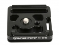

佳能5D2 MARKII专用快装板- 边沿小档边牢固卡住机身前后侧，避免左右滑动- 增加背带或腕带安装环，增加镜头或相机携带舒适性- 备有防滑钉安装孔，可安装M3防滑螺钉- 配备单脚架安装孔，可方便安装到单脚架上- 镂空设计，在不影响稳定性的前提下使重量达至最轻
很便宜很好用的一个快装板
兼容性高 很轻便 耐用性看着还行
暂无
镂空设计，十分小巧轻便 有穿绳孔可以穿个手绳二重保护相机
大型器材不适用